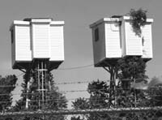
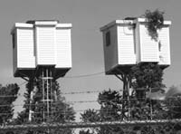

Saturday, July 03, 2004
Little Skyboxes Made Of Ticky Tocky
As I got out of my car with my camera I worried a bit about the department of homeland security. Was that woman over there watering her lawn a Tom Ridge proxy ? Were there black helicopters hovering just over the horizon ?
The big industrial complex at whose chain-link-fence-and-barbed-wire I was parked had been, after all, Raytheon , a major purveyor of a wide range of weapons of individual destruction. Which, taken collectively, do add up to weapons of mass destruction. But they are the good weapons of mass destruction. Our weapons of mass destruction.
Does "Raytheon" really mean "the light of God" ?
For the ladies, they produce a swell line of ornithologicaly themed missiles -- lark, sparrow, hawk, shrike, falcon, phoenix. For the gents, there are several phallically themed devices -- javelin, stinger, excalibur -- in addition to the ever-macho cruise, sidewinder, maverick and tomahawk missiles, the brilliant anti-armor tank submunition (BAT), the exoatmospheric kill vehicle, the aptly named HARM (High Speed Anti-Radiation Missile) and RAM (Rolling Airframe Missile). Why, they even produce a groundbreaking, post-modern, gender-inclusive device, the LGB, aka the Paveway Laser Guided Bomb.
A munition for practically everyone. (Note to CEO, how about a line of Celibate cruise missiles ?)
Of course, the plant whose perimeter I was stalking had closed a few years ago. The buildings have been refurbished, but are still mostly empty save for a gym and a bio-tech firm. There's lots of primo real estate left, just waiting to actualize its full negative capability.
I had come to photograph the Raytheon skyboxes -- curious, white shingled rooms on stilts. For all their evocation of desert stylites, Swiss Family Robinson and the tree houses of our childhood, I suspect they relate more to the testing of radar-related devices than to peaceable shelterings.

Along with The Church Of The Holy Armadillo

they represent one of Waltham's chief architectural curiosities. In fact, the military quonset hut motif of the church goes well, don't you think, with the munitions plant down the road ? And isn't it, well, practically chiasmic -- bomb plant named after God, God house shaped like a army barracks ? Onward Christian Soldiers ! Onward War-Mongering Christians ! And, come to think of it, isn't the armadillo like a little armored tank ? And isn't the church also awfully like Darth Vader's helmet ?

Nonetheless, I do admire these little stilted dollhouses. I would like to decommision one and live there, especially the one with the little rooftop garden. The location is a little stark -- overlooking an enormous, empty parking lot. But don't they seem like hermitages ? Perfect for a little laura of aerial hermits ?


I am imagining a Robert-Oppenheimer-like geek-monk living there, deeply contemplative, rapturously filling volumes with abstruse and beautiful symbols. Using a quasi-medieval slide-rule, of course. And, later, recoiling in horror from what he'd wrought.
Just as I can imagine a forlorn priest in the Holy Armadillo's rectory (or an imam in the Mosque of the Sacred Porcupine) lamenting all the ordnance being deployed and all the lives being lost in the name of "God."
The big industrial complex at whose chain-link-fence-and-barbed-wire I was parked had been, after all, Raytheon , a major purveyor of a wide range of weapons of individual destruction. Which, taken collectively, do add up to weapons of mass destruction. But they are the good weapons of mass destruction. Our weapons of mass destruction.
Does "Raytheon" really mean "the light of God" ?
For the ladies, they produce a swell line of ornithologicaly themed missiles -- lark, sparrow, hawk, shrike, falcon, phoenix. For the gents, there are several phallically themed devices -- javelin, stinger, excalibur -- in addition to the ever-macho cruise, sidewinder, maverick and tomahawk missiles, the brilliant anti-armor tank submunition (BAT), the exoatmospheric kill vehicle, the aptly named HARM (High Speed Anti-Radiation Missile) and RAM (Rolling Airframe Missile). Why, they even produce a groundbreaking, post-modern, gender-inclusive device, the LGB, aka the Paveway Laser Guided Bomb.
A munition for practically everyone. (Note to CEO, how about a line of Celibate cruise missiles ?)
Of course, the plant whose perimeter I was stalking had closed a few years ago. The buildings have been refurbished, but are still mostly empty save for a gym and a bio-tech firm. There's lots of primo real estate left, just waiting to actualize its full negative capability.
I had come to photograph the Raytheon skyboxes -- curious, white shingled rooms on stilts. For all their evocation of desert stylites, Swiss Family Robinson and the tree houses of our childhood, I suspect they relate more to the testing of radar-related devices than to peaceable shelterings.
Along with The Church Of The Holy Armadillo
they represent one of Waltham's chief architectural curiosities. In fact, the military quonset hut motif of the church goes well, don't you think, with the munitions plant down the road ? And isn't it, well, practically chiasmic -- bomb plant named after God, God house shaped like a army barracks ? Onward Christian Soldiers ! Onward War-Mongering Christians ! And, come to think of it, isn't the armadillo like a little armored tank ? And isn't the church also awfully like Darth Vader's helmet ?
Nonetheless, I do admire these little stilted dollhouses. I would like to decommision one and live there, especially the one with the little rooftop garden. The location is a little stark -- overlooking an enormous, empty parking lot. But don't they seem like hermitages ? Perfect for a little laura of aerial hermits ?

I am imagining a Robert-Oppenheimer-like geek-monk living there, deeply contemplative, rapturously filling volumes with abstruse and beautiful symbols. Using a quasi-medieval slide-rule, of course. And, later, recoiling in horror from what he'd wrought.
Just as I can imagine a forlorn priest in the Holy Armadillo's rectory (or an imam in the Mosque of the Sacred Porcupine) lamenting all the ordnance being deployed and all the lives being lost in the name of "God."
Friday, July 02, 2004
Desolee

I have always admired the Gallic apology "je suis desolee." It so surpasses "excuse me," "I'm sorry" or even "pardonnez-moi" in emotional contrition, that it contains within its almost histrionic exaggeration a soupcon of ironic insincerity.
But today I am desolate in the true sense of the word. Beyond consolation.
Our splendid little kitty, Rosa, died yesterday.
The call came shortly after I arrived home from work. It was a neighbor, a stranger, reporting she'd found Rosa dead in the street that morning, run over, and had retrieved her, initially thinking it was her own orange cat.
I grabbed a towel and drove to her house. Two women, mother and daughter, were waiting in the driveway.
The older woman explained that her son had triple bagged poor little Rosa and placed her in the trash. "She was starting to smell," she said, apologetic, emotional herself.
"I understand," I reassured her and went through layers of trash bag and trash until I saw blood-spattered orange fur. A teenage girl stood on the steps, looking grief-sricken and close to tears herself.
Rosa had been dead long enough for rigor mortis to have come and gone. Her body was strangely warm from the sun and pliant. I lifted her from the trash and placed her on a dark blue towel. Her head seemed flattened. There was some blood on her paws. There was sand in her fur. She was heavier than I could ever imagine our sprightly, mercurial little cat. Almost impossibly heavy. In that moment I understood "dead weight." No breath, no purr, no restless, joyful movement, no sprightly cat attention directed toward every earthly wonder in her world. Just flesh, lugubriously still. A thing.
I carried her swaddled body to the car. As I drove home, the smell of decay filled the air.
Home, I carried her from room to room, full of sadness, every old loss, human and feline, stirring in the vault of my brain, ghosts assembling to form a choir of grief.
Where was Rosa ?
I listened for her in the wind in the trees, I looked for her in the astonishing, Rose-colored full moon. Nowhere. There was no thought I could think, none at all, that gave consolation. No God thought. No Zen thought. No thought that "grief is just a thought." None.
DK and I wept and wept. "The house is empty," he said. I slept fitfully. He didn't sleep at all. We talked about her: her sweet, gregarious, affectionate nature. How she licked the other kitties' heads, how she nuzzled us. How she swaggered about. How she squeak-purred, and conversed with us.
She loved to go outside. She loved the summer. She was a street kitty from birth, the shelter told us. We'd noted she did not shy from the road like our other two, more circumspect outside cats. We should have heeded that. I wish we'd heeded that.
Waking from an odd dream, walking in the dark to the bathroom, I felt my own weight. I was topheavy, about to fall over. I felt like the earth was trying to pull me down, and under. "This," I thought, "is what age and impending death must feel like."
Waking again to thunder and lightning at 4, I again interrogated the dangerous world: where is Rosa ? I thought of all the creatures, animal and human, currently in harm's way. The mothers and fathers across the planet who carried armsful of swaddled dead children. The impossible weight of death and loss and incarnation.
I thought of my own imperfect husbandry of my poor little Rosa. "Je suis desolee," little kitty. I am so, so sorry. I should never have let you out beyond the sphere of my care into the treacherous, car-ridden world.
Thursday, July 01, 2004
Transcendental Etude X

It was one of her rare and unpleasant insomnias. A small middle of the night half-awakening had opened up into a full chasm of alertness, thronged with small discomforts and anxieties. In fact that's all there seemed to be, there in the darkness beside the heinous red glow of the digital clock. Frets about work, health, finances, her son, the future. All the small stuff that made up her life. Then came the swarm of regrets and the panorama of failures. Fear. Self-loathing. Thoughts of decline and death. Hers, her loved ones'.
"This is it," she thought. "This is all there is. The rest is bullshit."
A whole layer of mental activity had disappeared, like a bright rind shucked off and tossed into the trash. She was burrowing through the pulp of an ugly, mealy fruit. What had happened to all those fine thoughts about transcendence, and all those plans and schemes for achieving it ? She'd been living a strange fantasy life. A Merton groupie. A Zen Trekkie. An RC Wannabe. But it had simply vanished. All that remained was a sediment of dysphoria. Unlust as Freud had said.
Eventually sleep had returned, but she woke with a sour residual distress, nagging as a hangover. Two cups of coffee barely touched it.
Suddenly, while showering, she remembered a scene from her childhood. She couldn't have been more than ten. She was at her grandparents' house, and the adults were wallpapering the living room. They were removing the old paper. Steaming and scraping. She stood by and watched, fascinated, as layer after layer of wallpaper emerged. It was like the geologic strata in her books. Archeological. Free-form, 1960's amoeboid blobs. Then red velvet calligraphic scrolls on creamy white. Then bucolic scenes of country life complete with lords, ladies and horses. Next came a series of tiny patterened nosegays on pastel grounds, then layers of staid geometrics. Then cabbage roses. Finally, wide, funereal brown wainscot-like bars.
Last night she'd found herself in the horsehair plaster.
As she stood under the hot, restorative water, she realized that all the fretful stuff below the vanished rind of pleasant fantasy was also rind. Like the layers of wallpaper in her Grandmother's house. She needed to take it down farther and farther, layer by layer, through paper and plaster and insulation and woodframe and shingle, right through the wall to light and air.
And then through that.
Double Double Toil And Trouble


Sunday, June 27, 2004
Look !